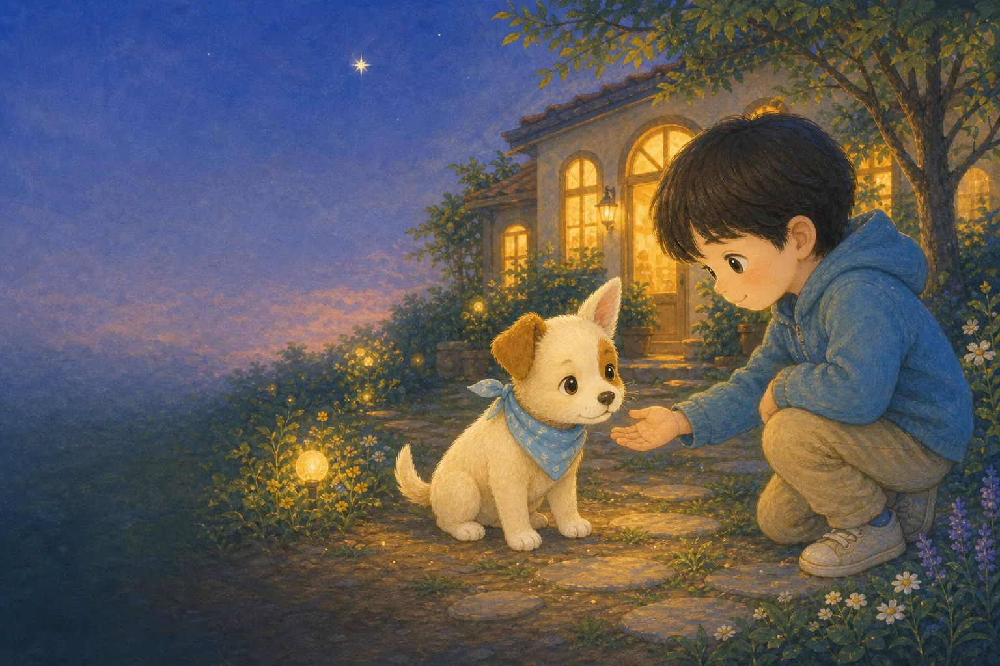

가족과 책임을 배우는 이야기
별이가 기다린
한마디
5–9세 · 약 4분

가족과 책임을 배우는 이야기
5–9세 · 약 4분
작은 강아지가 보호소에 왔어요.
한쪽 귀가 별처럼 쫑긋해서 이름은 ‘별이’가 되었지요.
“이제 따뜻한 곳에서 천천히 쉬어도 돼.”
많은 사람들이 보호소를 다녀갔어요.
별이는 파란 별 장난감을 꼭 안고 조용히 기다렸답니다.
“나를 빨리 고르지 않아도 괜찮아.”
어느 날, 하늘이라는 아이가 찾아왔어요.
하늘이는 다가가 안지 않고 조금 떨어져 책을 읽었지요.
“별아, 네가 먼저 오고 싶을 때 와도 돼.”
하늘이네 가족은 여러 번 별이를 만나러 왔어요.
밥과 산책, 병원과 기다림까지 꼼꼼히 배웠답니다.
“가족이 된다는 건 오래 지키는 약속이래.”
마침내 함께 집으로 가는 날이 왔어요.
별이는 익숙한 방석과 장난감도 빠짐없이 챙겼지요.
“별아, 우리 집에 가자. 평생 함께 가자.”
별이는 새집에서도 천천히 마음을 열었어요.
매일의 물과 밥, 산책과 기다림 속에서 진짜 가족이 되었답니다.
별이가 기다린 한마디는 ‘예뻐’가 아니라 ‘끝까지 함께하자’였어요.
끝
반려동물을 가족으로 맞기 전에 무엇을 준비해야 할까요?